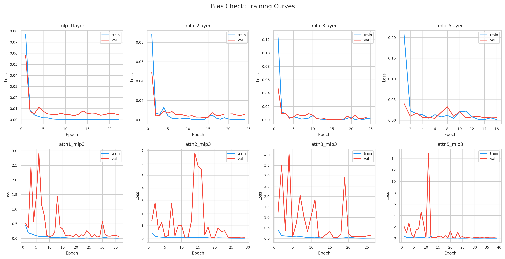
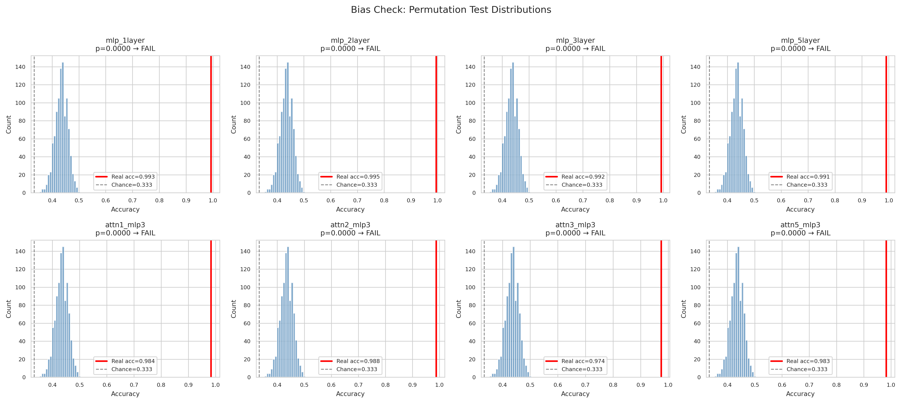
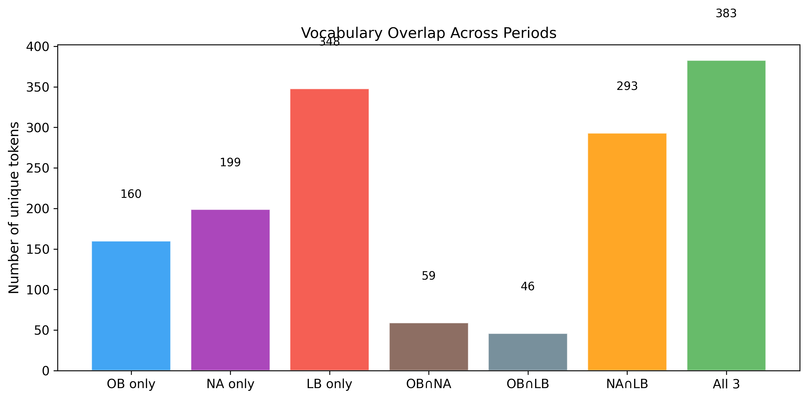
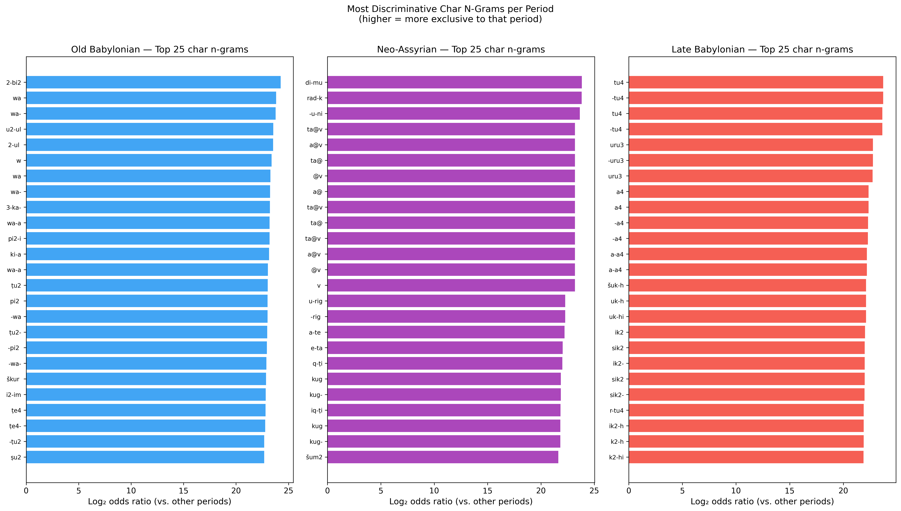
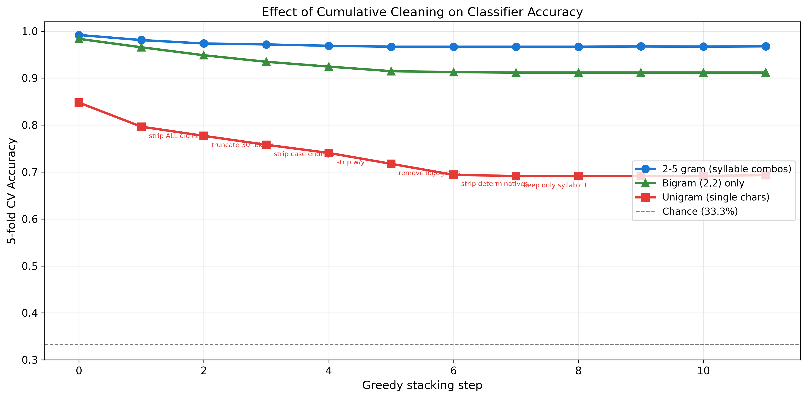
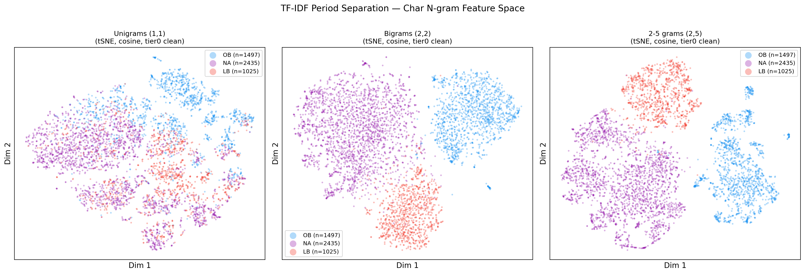
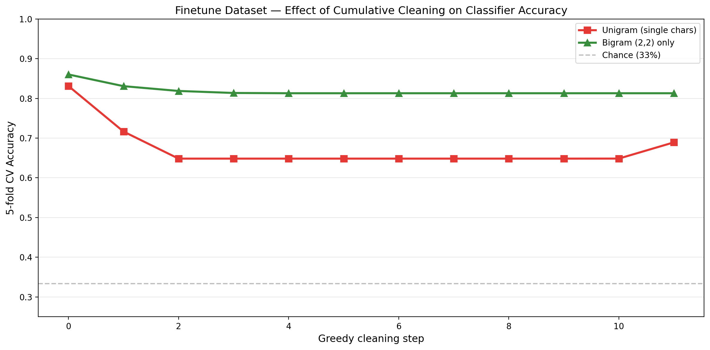
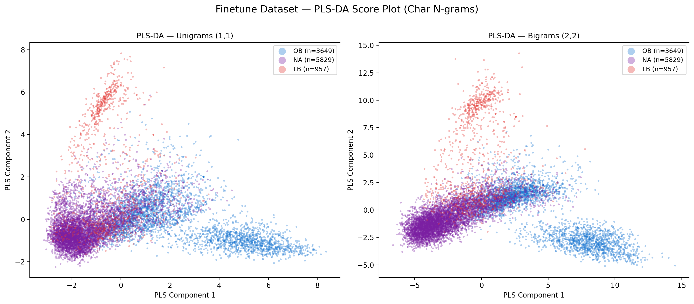
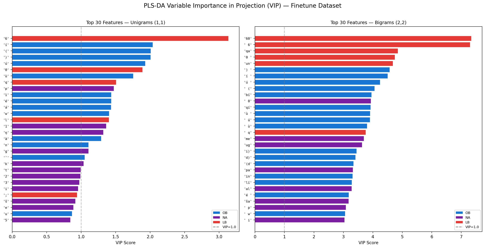
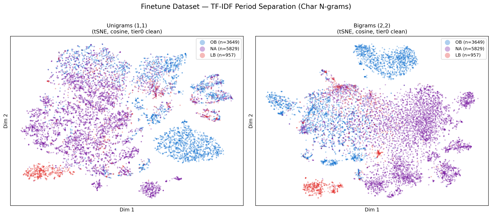

Can a simple classifier date Akkadian texts from transliteration alone?
Before running LLM evaluation (Track A — "can an LLM date Akkadian texts?"), we must verify that period labels are not trivially recoverable from surface features alone. If a simple classifier can distinguish OB NA LB from raw transliteration, an LLM could score well by pattern-matching rather than understanding.
Each period comes from a single corpus source: archibab → OB, oracc → NA, lbl → LB (zero overlap).
| Model | Accuracy | F1 Macro | p-value |
|---|---|---|---|
| MLP 1-layer | 99.3% | 0.992 | 0.0000 |
| MLP 2-layer | 99.5% | 0.994 | 0.0000 |
| MLP 3-layer | 99.2% | 0.991 | 0.0000 |
| MLP 5-layer | 99.1% | 0.989 | 0.0000 |
| Attn1+MLP3 | 98.4% | 0.983 | 0.0000 |
| Attn2+MLP3 | 98.8% | 0.986 | 0.0000 |
| Attn3+MLP3 | 97.4% | 0.975 | 0.0000 |
| Attn5+MLP3 | 98.3% | 0.981 | 0.0000 |



| Filter | What it removes | Example | Evidence |
|---|---|---|---|
tier0 baseline | ORACC markup (@v) and encoding artifacts | TA@v → TA | @v appears 968× in NA, zero in OB/LB — pure corpus artifact |
normalize long vowels | Macron vowels (ā ī ū ē) | ūmī → umi | Zero occurrences in entire dataset — no effect |
lowercase | Upper/lower distinction | ARAD → arad | Logogram ratio: OB=25.7%, NA=44.0%, LB=52.0% |
strip determinatives | Semantic-classifier prefixes (lu2-, I-, d-, uru-) | lu2-ARAD → ARAD | lu2- is 18× more frequent in NA than OB; I- is 7× more in LB |
strip w and y | West Semitic consonants exclusive to OB | a-wa-rum → a-a-rum | w: 1,345 occurrences in OB, zero in NA/LB (phoneme lost after OB) |
strip -meš | Sumerian plural suffix | ARAD-meš → ARAD | Usage: OB=0.9/text, NA=2.4, LB=1.8 |
strip case endings | Akkadian grammatical endings (-am, -im, -um) | al-tim → al | OB ventive -am: 2.77/text in OB vs 0.10 in NA (28× ratio) |
strip ALL digits | Subscript numbers and all digits | ša2 → ša | Same sign read ša in OB but ša2 in LB; rate_4 is #1 important feature |
truncate to N tokens | Text beyond first N words | word31... → removed | Length differs: OB median=39 words, NA=40, LB=53 |
remove ALL logograms | All uppercase tokens (Sumerian words) | ARAD → removed | Logogram rate: OB=25.7% vs LB=52.0% (2× ratio) |
keep only syllabic | Everything except lowercase phonetic Akkadian | LUGAL → removed | Combines logogram + determinative + uppercase removal |

w- and wa-containing sequences (the West Semitic /w/ phoneme, phonologically absent in NA and LB). NA's top features are almost entirely @v ORACC markup — a pure corpus artifact, not language. LB is dominated by subscript-4 sequences (tu4, ša2, uru3) reflecting its distinctive sign-reading conventions. Once @v is stripped from NA, genuine NA linguistic markers surface.Nothing individually drops accuracy below 97%.
| Filter | Example | Accuracy | Drop |
|---|---|---|---|
tier0 baseline | TA@v → TA | 99.2% | — |
normalize long vowels | ūmī → umi | 99.2% | 0.0 |
lowercase | ARAD → arad | 99.2% | 0.0 |
strip determinatives | lu2-ARAD → ARAD | 99.2% | 0.0 |
strip w and y | a-wa-rum → a-a-rum | 99.2% | 0.0 |
strip -meš plural | ARAD-meš → ARAD | 99.2% | 0.0 |
strip case endings | al-tim → al | 99.1% | -0.1 |
strip ALL digits | ša2 → ša | 99.0% | -0.2 |
truncate 30 tokens | word31... → removed | 98.7% | -0.4 |
remove ALL logograms | ARAD → removed | 98.4% | -0.8 |
keep only syllabic | LUGAL → removed | 98.1% | -1.1 |
truncate 10 tokens | word11... → removed | 97.4% | -1.8 |
| Step | Filter added | Accuracy | Total drop |
|---|---|---|---|
| 0 | tier0 baseline | 99.2% | — |
| 1 | + keep only syllabic | 98.1% | -1.1 |
| 2 | + truncate 30 tokens | 97.4% | -1.8 |
| 3 | + strip determinatives | 97.2% | -2.0 |
| 4 | + strip subscript digits | 96.9% | -2.3 |
| 5 | + strip case endings | 96.7% | -2.5 |
| 6–11 | + all remaining filters | 96.7% | -2.5 |
After stacking every possible cleaning step: 96.7%. Only 2.5 percentage points lost.
Harshest test: classifier sees only single-character frequencies, no morphological patterns.
| Step | Filter added | Accuracy | Total drop | Chars left |
|---|---|---|---|---|
| 0 | tier0 baseline | 84.8% | — | 41 |
| 1 | + strip ALL digits | 79.6% | -5.1 | 31 |
| 2 | + truncate 30 tokens | 77.7% | -7.1 | 31 |
| 3 | + strip case endings | 75.8% | -9.0 | 31 |
| 4 | + strip w and y | 74.1% | -10.7 | 31 |
| 5 | + remove logograms | 71.7% | -13.0 | 28 |
| 6 | + strip determinatives | 69.4% | -15.4 | 28 |
| 7–11 | + all remaining | 69.1% | -15.7 | 26 |
Even single-character frequencies alone, after maximal cleaning, yield 69% (chance = 33%).
| Step | Filter added | Accuracy | Total drop |
|---|---|---|---|
| 0 | tier0 baseline | 98.3% | — |
| 1 | + keep only syllabic | 96.6% | -1.8 |
| 2 | + strip ALL digits | 94.9% | -3.5 |
| 3 | + truncate 30 tokens | 93.5% | -4.9 |
| 4 | + strip case endings | 92.4% | -5.9 |
| 5 | + strip determinatives | 91.5% | -6.9 |
| 6 | + strip w/y | 91.3% | -7.1 |
| 7–11 | + all remaining | 91.2% | -7.2 |
| N-gram range | Baseline | After full cleaning | Total drop |
|---|---|---|---|
| 2-5 grams | 99.2% | 96.7% | -2.5 pts |
| Bigrams (2,2) | 98.3% | 91.2% | -7.2 pts |
| Unigrams (1,1) | 84.8% | 69.1% | -15.7 pts |
Longer n-grams are more robust to cleaning because they capture morphological and syllabic patterns that are genuine linguistic features.

These are real diachronic differences, not corpus artifacts:
| Feature | OB | NA | LB | Type |
|---|---|---|---|---|
w consonant | 1,345 occ. | 0 | 0 | Phonological (West Semitic /w/ lost after OB) |
Ventive -am | 2.77/text | 0.10/text | — | Morphological (28× ratio) |
Ventive -im | 2.30/text | 0.05/text | — | Morphological (46× ratio) |
ma-a quotative | rare | high-freq | rare | Discourse marker (NA-exclusive) |
lu2- determinative | 0.1/text | 1.8/text | — | Convention (18× ratio) |
I- name prefix | 0.6/text | — | 3.9/text | Onomastic (7× ratio) |
| Logogram rate | 25.7% | 44.0% | 52.0% | Writing system preference |
| Subscript conventions | ša | ša | ša2 | Editorial (same sign, different reading) |

Only one feature was a pure corpus artifact: @v ORACC markup (968 occurrences in NA, zero elsewhere). Removing it had zero effect on accuracy.
Experiments 1–2 used only the curated 4,957-text evaluation set (letters only). To confirm the signal is not an artifact of that corpus, we replicated the analysis on the full finetune dataset — a broader, mixed-genre collection at fragment level.
archibab → OB; ORACC joined with CDLI catalog → OB/NA/LB; eBL dropped (no period metadata). Same TF-IDF + logistic regression + 5-fold CV as Experiment 2.
Dropped (29,994 fragments, 71.6%):
| N-gram | Accuracy | F1 Macro |
|---|---|---|
| Unigrams (1,1) | 83.1% ± 12.9% | 0.766 ± 0.150 |
| Bigrams (2,2) | 86.0% ± 11.6% | 0.803 ± 0.135 |
Higher variance than the evaluation set reflects shorter fragments (median 35 signs vs ~40 words), class imbalance (LB = 9.2%), and mixed genres.
Same 11 filters, same greedy stacking. Incremental Δ = drop caused by that filter alone (not cumulative from baseline).
| Step | Filter added | Accuracy | Incremental Δ | Total drop |
|---|---|---|---|---|
| 0 | tier0 baseline | 83.1% | — | — |
| 1 | + keep only syllabic | 71.6% | −11.5 | −11.5 |
| 2 | + strip w/y | 64.8% | −6.8 | −18.3 |
| 3–11 | + all remaining filters | 64.8% | 0.0 | −18.3 |
| Step | Filter added | Accuracy | Incremental Δ | Total drop |
|---|---|---|---|---|
| 0 | tier0 baseline | 86.0% | — | — |
| 1 | + keep only syllabic | 83.1% | −2.9 | −2.9 |
| 2 | + truncate 30 tokens | 81.9% | −1.2 | −4.1 |
| 3 | + strip w/y | 81.4% | −0.5 | −4.7 |
| 4–11 | + all remaining filters | 81.3% | ≈0.0 | −4.7 |

The table below shows the incremental accuracy drop per greedy step — i.e., the effect of each filter in isolation from the previous state, not cumulative from baseline.
| Step | Eval Set filter | Eval Δ | Finetune filter | FT Δ |
|---|---|---|---|---|
| 1 | strip ALL digits | −5.1 | keep only syllabic | −11.5 |
| 2 | truncate 30 tokens | −2.0 | strip w/y | −6.8 |
| 3 | strip case endings | −1.9 | (plateau) | 0.0 |
| 4 | strip w/y | −1.7 | — | — |
| 5 | remove logograms | −2.3 | — | — |
| 6 | strip determinatives | −2.3 | — | — |
| Step | Eval Set filter | Eval Δ | Finetune filter | FT Δ |
|---|---|---|---|---|
| 1 | keep only syllabic | −1.8 | keep only syllabic | −2.9 |
| 2 | strip ALL digits | −1.7 | truncate 30 tokens | −1.2 |
| 3 | truncate 30 tokens | −1.4 | strip w/y | −0.5 |
| 4 | strip case endings | −1.0 | normalize long vowels | −0.1 |
| 5 | strip determinatives | −1.0 | (plateau) | 0.0 |
What is VIP? VIP (Variable Importance in Projection, Wold 1993) summarises how much each feature contributes across all PLS latent components, weighted by how much each component explains of Y (the period labels). Features with VIP > 1.0 contribute more than average to class separation. Unlike log-odds (which is per-class), VIP is multivariate — it integrates contribution across all three class separations simultaneously.
| Rank | Feature (bigrams) | VIP | Period | Linguistic meaning |
|---|---|---|---|---|
| 1–2 | 60, 6 | 7.3 | LB | Subscript-6 sequences — LB sign-reading convention |
| 3 | qa | 4.9 | LB | /q/ consonant, more common in LB sign readings |
| 5 | un | 4.7 | OB | Common OB syllable |
| 7 | í, ú | 4.5–4.2 | OB | Accented vowels, higher frequency in OB syllabic writing |
| 10 | bí | 4.0 | OB | OB syllabic pattern |
| 17 | me | 3.7 | LB | From -meš plural or LB vocabulary |
| 19–21 | i), d), (d | 3.4–3.3 | NA | Determinative {d} for divine names, more frequent in NA |



| Tier | Feature type | Key filters / VIP features | Why it separates periods |
|---|---|---|---|
| 1 — Writing system | Logogram rate, number notation, subscript digits | "keep only syllabic" (biggest single drop in both datasets); VIP: 6, 60, (, ) |
Logogram rate increases OB→NA→LB (25%→44%→52%). Subscript conventions (ša vs ša₂) differ by period editorial tradition. |
| 2 — Phonology & morphology | /w/ phoneme, case endings | "strip w/y" (2nd biggest on FT unigrams); VIP: w, qa, qí |
/w/ exists only in OB (lost after 1600 BC). Case endings (−am, −im) productive in OB, vestigial in NA/LB — 28× frequency ratio. |
| 3 — Scribal conventions | Text length, determinatives | "truncate 30 tokens"; "strip determinatives" | Median length differs by period. Determinative lu2- is 18× more frequent in NA than OB. |
None of these are corpus artifacts. They are well-documented diachronic changes in Akkadian spanning 1,000+ years, consistent with standard Assyriological literature.
The bias cannot be cleaned because it is not bias — it is language change.
OB, NA, and LB are separated by 500–1,000 years each and differ at every linguistic level: phonology, morphology, vocabulary, formulaic conventions, sign-reading traditions, and logographic usage. A simple classifier detects this trivially because a human Assyriologist would too, using the exact same features.
This conclusion holds across both the evaluation set (4,957 curated letters, 97–99% neural accuracy, 69–99% after maximal cleaning) and the finetune dataset (10,435 mixed-genre fragments, 83–86% logistic regression accuracy, 65–81% after maximal cleaning). The finetune replication confirms the signal is not an artifact of evaluation corpus curation.
What the FAIL means for Track A: Period is strongly encoded in the text. This is a precondition for the LLM evaluation being meaningful, not a flaw. The research question is whether the LLM understands why these features signal the period, or merely pattern-matches on them blindly.
src/bias_check/bias_analysis_finetune.ipynb.